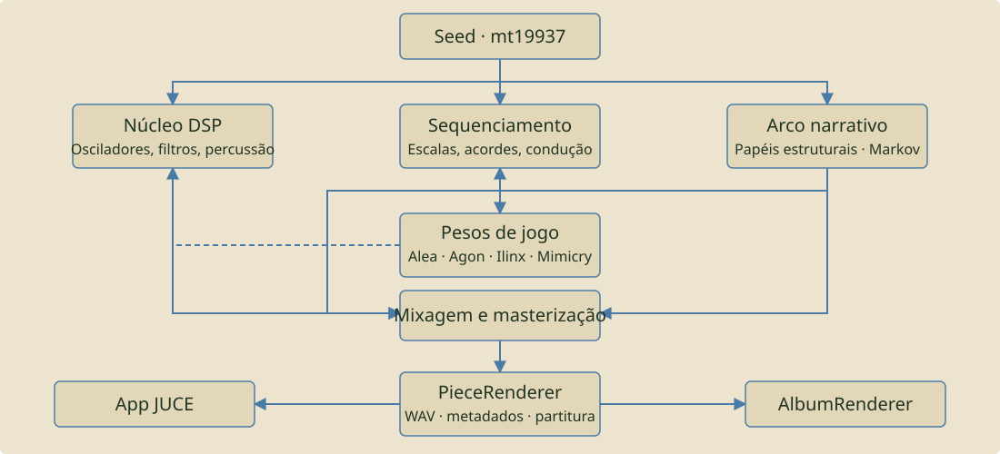
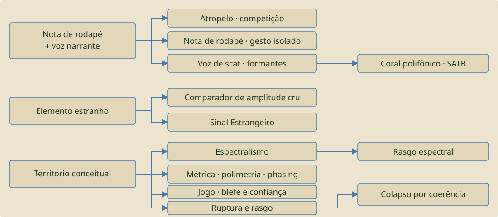

02 · O instrumento inteiro
Da seed à escuta
O Rasgo Synth não recebe notas prontas para depois colori-las. Ele interpreta uma seed dentro de um espaço autoral e constrói uma peça enquanto tempo, matéria, narrativa, relação e escuta se influenciam.
A seed é o ponto de partida de uma trajetória. Ela escolhe identidade composicional, escalas, ritmos, vozes possíveis, probabilidades e condições do render.
Alea, Agon, Ilinx e Mimicry combinam energia, memória, risco, liberdade e informação oculta. São forças que enviesam decisões, não etiquetas decorativas.
Grade, pulso, subdivisão, swing, microtiming, acento, gate, probabilidade, fase, polimetria, deriva e memória temporal formam a arquitetura do tempo musical.
Osciladores, ressonadores, ruídos, granularidade, FM, filtros e percussão transformam decisões abstratas em som. Tuba, acid e core-sub são corpos graves diferentes.
Uma caminhada narrativa organiza abertura, desenvolvimento, clímax, ruptura, decantação e fechamento. A duração da peça avulsa emerge da trajetória; no álbum há também planejamento opcional de duração.
As vozes podem responder, competir, interromper, preservar, deformar ou ceder. Bateria, baixo, melodia, texturas e câmara relacional possuem funções próprias.
No A/B expressivo, eventos recebem gesto: articulação, dinâmica interna, ataque, slide, estabilidade, falha, recuperação e memória.
A atenção narrativa mede a sobrevivência pós-espaço e aplica apenas correções limitadas. Não transforma ausência legítima em volume obrigatório.
O PieceRenderer entrega PCM24/48 kHz, metadata, partitura textual e telemetria, distinguindo módulo disponível, manifestado, audível e influente.
Como ler os fluxos
O fluxograma da arquitetura mostra causalidade: a seed alimenta o núcleo, o sequenciamento e o arco; o arco modula densidade, registro e energia; jogo, relação e mixagem observam ou transformam decisões dentro de limites explícitos.
A grade de módulos mostra o que se manifestou naquela peça. A genealogia mostra de onde vieram as seções e como o arco se transformou. O log registra acontecimentos com horário. A partitura .txt acompanha o WAV como relato legível da trajetória, não como notação tradicional completa.
Novos controles do Studio
Modo Selvagem abre trajetórias adicionais; desligado favorece reprodução determinística.
Auditoria Stems mede sobrevivência pós-espaço e atenção narrativa; não é necessária para ouvir.
A/B Expressivo ativa memória temporal, articulação e comportamento performativo experimental.
ALEA / seed muda o ponto de partida; COMPOR renderiza; VARIAR SEED deriva uma nova seed de uma região ou instante em reprodução.
03 · Manifesto
O que este instrumento é
Um dado lançado materializa o acaso. O Studio explora uma composição que conserva e transforma acontecimentos dentro da peça: repetição, memória local, resposta e ruptura. Aprender e crescer entre execuções continuam sendo horizontes conceituais, não capacidades implementadas ou inteligência artificial treinada.
A semente decide o caminho. O instrumento materializa a composição, mas materializar aqui nunca significou obedecer cegamente — dentro do espaço desenhado, das regras, do repertório de escolhas possíveis, o instrumento se arrisca de verdade: modula para intervalos que ninguém esperaria, cita e distorce sua própria história recente num rasgo, numa ruptura, nunca um crossfade suave.
A música que se ouve é ação artística, ato político e ação existencial ao mesmo tempo, sem hierarquia entre elas: artística porque a escolha ali é estética de verdade; política porque recusar a padronização e a fórmula comercial já é tomar posição; existencial porque a peça assume sua própria trajetória e se arrisca nela, sem medo do incerto.
“Uma semente entra, uma peça inteira sai: a semente é o rasgo, a ruptura originária de onde as escolhas se ramificam.”
Comentário real no código-fonte do motor.
Alea
O acaso — espinha dorsal desde o início: a semente, os nove mapas de caos, cada sorteio independente que decide se um módulo existe nesta peça específica.
Ilinx
A vertigem, a perda de controle buscada de propósito — a família inteira de mecanismos de ruptura: Rungler, colapso de Rössler, morte térmica, self-feedback, silêncio cirúrgico.
Mimicry
O simulacro — portar o comportamento de um TR-808 ou de uma tuba sem copiar o esquema elétrico, e a narrativa que a peça conta sobre si mesma: seções nomeadas, arquivo apócrifo.
Agon
Mérito decidindo entre opções em vez de sorteio decidindo sozinho — quatro vozes do instrumento carregam poder próprio, que solidifica conforme a peça acumula tempo vivido.
Roger Caillois, Os Jogos e os Homens (1958) — as quatro categorias formalizadas mecanicamente como pesos contínuos que enviesam onze mecanismos do motor.
04 · Conceito
Instrumento, não gerador
Você define uma configuração inicial — uma semente numérica, um andamento — e aperta compor: o software escreve sozinho uma peça inteira, com desenvolvimento e variação contínua ao longo do tempo, não um loop que se repete.
Um princípio de design atravessa o projeto inteiro: portar a ideia, não copiar o circuito. Sempre que um esquema real foi estudado — CBS, Buchla, TR-808, MFOS, Instruō, Qu-Bit Electronix — o objetivo foi entender o comportamento sonoro e reimplementá-lo em C++ puro, nunca simular transistor por transistor.
A seed atua junto com andamento, escolhas de participantes e opções de render. ESCOLHER MÓDULOS oferece 34 participantes com Automático/Incluir/Excluir, não knobs individuais para todos os mecanismos. A escala continua sendo escolhida pelo motor. Direção musical, Expressivo e planejamento de álbum orientam os próximos renders; não alteram retroativamente um WAV.
Dois subprojetos
rasgo-synth-core — motor DSP em C++17 puro, sem dependência de plataforma. Osciladores, nove mapas caóticos, filtros, sequenciamento, arco narrativo, render de WAV + metadados.
rasgo-synth-app — aplicativo desktop JUCE: reprodução ao vivo, visualizações (osciloscópio estéreo, espectro, goniômetro, painel de módulos), captura e derivação de seed a partir de um trecho da própria forma de onda.

04 · Studio / Performance
Studio e Performance
Rasgo Synth Studio é o instrumento existente: um aplicativo desktop para compor, renderizar, ouvir e investigar peças generativas. Seu foco é autonomia, documentação, precisão e a história registrada de cada seed.
Rasgo Synth Performance é um instrumento irmão para execução ao vivo, gesto e baixa latência, com motor e host próprios. No Studio, a composição é calculada antes da escuta; no Performance, a execução acontece ao vivo.
Conhecer o Studio
Este catálogo reúne conceitos e referências técnicas em português. Na apresentação, você encontra o instrumento e seus manuais nos quatro idiomas. O tutorial acompanha os controles, a primeira composição e o modo álbum.
05 · Arquitetura
Da semente ao arquivo
A seed inicia a trajetória. Comparações reproduzíveis exigem também o mesmo andamento, configuração, versão e estado externo pertinente, com Modo Selvagem desligado. A seed sozinha não é a receita completa.
O repertório inclui síntese subtrativa, aditiva, ressonante, granular, estocástica, vetorial e FM, além de ruídos, filtros e mapas caóticos. Disponibilidade não significa que todas as fontes estejam ativas ou audíveis em cada peça.
39 escalas pesquisadas mais peneiras de Xenakis geradas; condução de voz real, progressões de acorde, transformações Neo-Riemannianas; oito vozes de percussão com arquétipos rítmicos reais.
A caminhada narrativa organiza seções, energia e encerramento. Os diagramas abaixo resumem relações históricas; não são inventário exaustivo do motor atual. O tutorial descreve os controles disponíveis hoje.
Alea/Agon/Ilinx/Mimicry, amostrados do 4-simplex, enviesam onze mecanismos já existentes em três grupos temáticos — cada peça ganha sua própria mistura autoral.
PieceRenderer escreve o WAV com metadados embutidos, um .txt companheiro legível como partitura, e um índice acumulado entre sessões.

Relações completas — notação textual histórica
flowchart TB
SEED["Semente numérica
mt19937"] --> DSP["Núcleo DSP
osciladores · 9 mapas caóticos · filtros · percussão"]
SEED --> SEQ["Sequenciamento
39 escalas + peneiras · acordes · voice leading"]
SEED --> ARC["Arco narrativo
cadeia de Markov · 5 papéis estruturais"]
ARC -- "densidade · filtro · registro" --> DSP
ARC -- "densidade · registro" --> SEQ
ARC --> GAME["Pesos de jogo de Caillois
Alea · Agon · Ilinx · Mimicry"]
GAME -. viés de probabilidade .-> DSP
GAME -. viés de probabilidade .-> SEQ
DSP --> MIX["Mixagem e masterização
dither · limiter lookahead · PolyBLEP"]
SEQ --> MIX
ARC --> MIX
MIX --> RENDER["PieceRenderer
WAV + metadados + partitura .txt"]
RENDER --> APP["App JUCE
reprodução · visualização · captura"]
RENDER --> ALBUM["AlbumRenderer
trajetória multi-faixa pelo simplex"]
06 · Genealogia
Uma rede, não uma linha reta
A história real deste projeto não é uma evolução linear — é uma rede: ideias que bifurcam em direções que ninguém previu no início, mecanismos que se sobrepõem entre módulos que parecem não ter relação nenhuma, e perguntas que retornam fases depois vestidas de outra coisa. Só relações que realmente aconteceram, cada uma citável à sua fase de origem.

Relações completas — notação textual histórica
flowchart LR
NN["'nota de rodapé' + 'voz narrante'
(item antigo da lista de pendências)"] -->|"cresceu em algo que já
não era uma 'voz que narra'"| ATR["Atropelo
vozes competindo, interrompendo"]
NN -->|"resolvida à parte"| FN["Nota de rodapé
gesto isolado fora da escala"]
NN -->|"síntese vocal real,
escopo dividido em duas metades"| SC["Voz de scat
formantes reais"]
SC -->|"coral, polifonia"| CR["Coral polifônico
quatro vozes SATB"]
EE["'elemento estranho'
uma ideia"] -->|"versão interna"| EEI["comparador de amplitude cru"]
EE -->|"versão literal"| EEL["Sinal Estrangeiro
única quebra honesta de reprodutibilidade"]
TER["território conceitual
não explorado"] --> ESP["Espectralismo
objeto espectral"]
TER --> MET["Métrica experimental
polimetria · phasing"]
TER --> JOG["Jogo
sinal de blefe e confiança"]
TER --> RAS["Ruptura e rasgo"]
ESP -->|"mesmos parciais,
nova pergunta"| RF["Rasgo espectral
Fiber Bundle Model"]
RAS -->|"segundo eixo,
mesma tarefa"| COL["Colapso por coerência
entropia de Shannon"]
07 · Catálogo técnico
Mecanismos e suas referências
Catálogo documental extraído do histórico de desenvolvimento. O número de registros não equivale ao número de módulos selecionáveis nem certifica o estado atual de cada implementação. Participação e contribuição audível dependem da configuração, da seed e do contexto musical; nenhum mecanismo precisa atuar em toda peça.
Catálogo interativo disponível com JavaScript.
Nenhum registro corresponde aos filtros. Limpe a busca ou escolha Todos.
08 · Referências
Em diálogo direto, com honestidade
Nenhum código-fonte de outro instrumento nem esquema elétrico exato foi copiado — os comportamentos foram reimplementados originalmente em C++ a partir de conceitos e documentação públicos. Tabela completa por mecanismo em CREDITS.md.
- Antitotem (2013–) — instrumento de hardware autoral, precursor e patrono do projeto.
- Kosmische — Nicolas Steven Miller, referência técnica/conceitual inicial (GPLv3, não integrante).
- Roland TR-808 — referência sonora para parte das oito vozes de percussão.
- Music Thing Modular — Turing Machine (Tom Whitwell) — trava/mutação por passo.
- Mutable Instruments (Émilie Gillet) — Rings, Clouds, Branches, reinterpretados.
- Instruō — ochd / Harmonàig (Ben Wilson / Jason Lim).
- Qu-Bit Electronix — Bloom (Andrew Ikenberry).
- Frap Tools — Sapèl — quatro cores de ruído.
- Rob Hordijk — Benjolin — cross-FM, Rungler.
- Ken Stone — CGS22 — divisor de clock XOR polirrítmico.
- Forrest Mims III — Stepped Tone Generator (Atari Punk Console).
- Ray Wilson — MFOS Noise Cornucopia.
- Robert Moog; Stilson & Smith — filtro ladder.
- Hal Chamberlin — state-variable filter.
- Polivoks (Formanta, URSS) — auto-oscilação real.
- Sequential Circuits Prophet VS — Vector Synthesis.
- Iannis Xenakis — Gendyn; teoria de sieves (peneiras).
- Joe Pritchard — The Chaos Cookbook (1992).
- Vesa Välimäki & Antti Huovilainen — PolyBLEP.
- Kaegi & Tempelaars — VOSIM.
- Brăiloiu; Stoyan Dzhudzhev — ritmo aksak balcânico.
- David Lewin; teoria neo-riemanniana.
- Gustav Freytag (1863) — a Pirâmide de Freytag.
- Kishōtenketsu — estrutura narrativa de 4 partes.
- Roger Caillois (1958) — os quatro jogos.
- John Chowning (1973) — síntese FM.
- John Coltrane; McCoy Tyner; Miles Davis — harmonia jazz.
- Komitas Vardapet; Tigran Hamasyan — modalismo armênio.
- Claude Debussy; Stravinsky; Milhaud; Poulenc.
- Harry Partch (1949) — afinação justa.
- Alois Hába; Ivan Wyschnegradsky; Easley Blackwood — microtonalismo.
- Steve Reich — Piano Phase, Clapping Music.
- Elliott Carter — modulação métrica.
- Justin London (2004) — métrica não-isócrona.
- Fletcher & Rossing — física de instrumentos musicais.
- Lerdahl & Jackendoff (1983) — teoria gerativa da música tonal.
- Peterson & Barney (1952) — formantes vocálicos.
- Pierce (1926); Daniels (1945); Weibull; Harlow & Phoenix (1978) — Fiber Bundle Model.
- Claude Shannon (1948) — entropia da informação.
- Johan Huizinga; Michel de Certeau.
- Gilles Deleuze — repetição com diferença.
- Derrida; Foucault; Agamben; Ricœur; Benjamin — arquivo e memória.